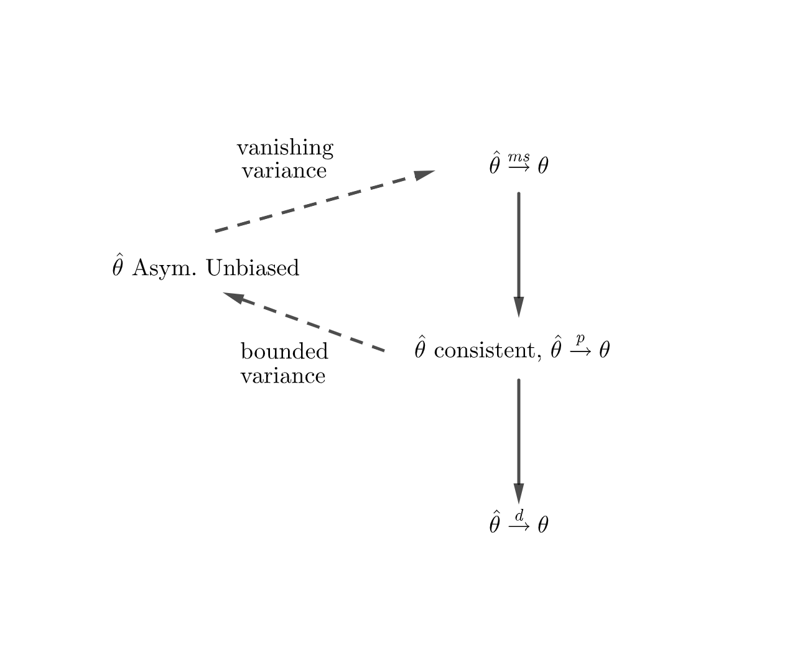
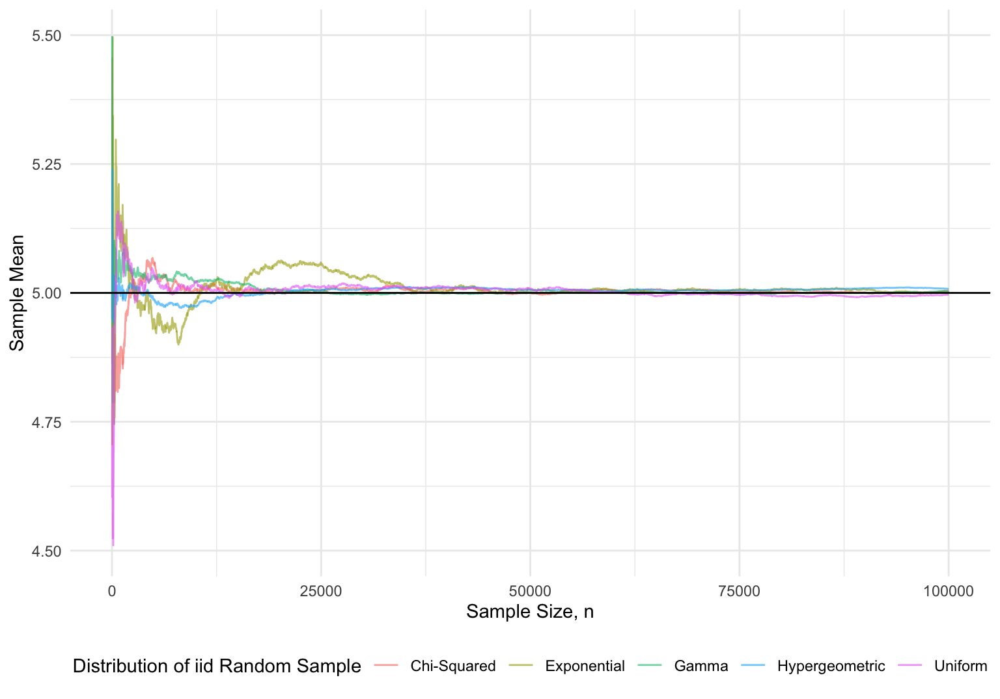

2 Asymptotic Properties of Estimators
When considering estimators in Chapter 1, we kept the sample size \(n\) fixed when assessing estimators. We now consider how estimators behave as \(n\to\infty.\) In practice, we will never have infinite data, asymptotics gives us an approximate idea of how estimators perform for large data sets. A comprehensive reference in asymptotic theory is due to Van der Vaart (2000). For a treatment concerned purely with econometrics, Newey and McFadden (1994) provide a phenomenal survey, most of which we will touch on when discussing general classes of estimators.
With loss of some generality, we will assume that all random variables have finite expectation and variances. Dispensing with this assumption is something for a probability course.
2.1 Convergence
At some point in high school, most students encounter the concept of a numeric sequence, and how they can converge to a limit. Later on, perhaps when taking a real analysis course, sequences are generalized to spaces of functions. A sequence of functions may also converge to a limit, whether that be converging pointwise and/or converging uniformly (for details see Rudin (1976)). Random variables are functions from a sample space to \(\mathbb R\), so we can consider how these functions converge. For the most part, the dimension of the random variable (i.e whether it takes on scalar values of vector values) won’t really matter, so we’ll remain agnostic about the exact case.
2.1.1 Convergence in MSE
The first type of convergence we’ll work with deals with MSE.
Definition 2.1 A sequence of random variables \(X_n\) converges in mean square to a random variable \(X\), written as \(X_n\overset{ms}{\to} X\), if \[\lim_{n\to\infty} \text{E}\left[(X_n - X)^2\right] = 0.\]
\(X_n \overset{ms}{\to}X\) if the average distance between \(X_n\) and \(X\) shrinks as \(n\to\infty\) where distance is measured as \((X_n - X)^2\). We can also have \(X_n \overset{ms}{\to}c\) for some constant \(c\), as \(c\) is a trivial random variable.
Example 2.1 Suppose we draw a sample of \(n\) iid random variables \(Z_i\) and define \(X_n\) to be the sample mean of our observations. \[X_n = \frac{1}{n}\sum_{i=1}^n Z_i\] If \(\text{E}\left[Z_i\right] = \mu\) and \(\text{Var}\left(Z_i\right) = \sigma^2\) for all \(i\), we have \(X_n\overset{ms}{\to}\mu\): \[\begin{align*} \lim_{n\to\infty}\text{E}\left[(X_n - \mu)^2\right] & = \lim_{n\to\infty}\text{Var}\left(X_n\right) + \text{Bias}(X_n) \\ &= \lim_{n\to\infty} \frac{\sigma^2}{n} + 0 & (X_n \text{ unbiased}) \\ & = \lim_{n\to\infty} \frac{\sigma^2}{n} \\ & = 0. \end{align*}\]
What does this convergence “look like”? If \(Z_i\overset{iid}{\sim}N(0,1)\), we know that \(X_n = \bar Z \sim N(\mu, \sigma^2/n)\). Let’s plot this distribution for increasing values of \(n\).
Show code which generates figure
expand.grid(
x = seq(-3, 3, length = 500),
n = c(1, 5, 10, 50, 100)
) %>%
mutate(
y = dnorm(x, 0, sqrt(1/n)),
n = as.factor(n)
) %>%
ggplot(aes(x,y, color = n)) +
geom_line() +
theme_minimal() +
labs(x = "Value of X_n", y = "Density", color = "Sample Size") +
theme(legend.position = "bottom")
This example betrays a useful property related to variables which converge in mean square.
Proposition 2.1 A sequence of random variables \(X_n\) converges in mean square to a constant \(c\) if and only if \(\text{E}\left[X_n\right]\to c\) and \(\text{Var}\left(X_n\right)\to 0\).
Proof. \((\Longrightarrow)\) Suppose \(X_n \overset{ms}{\to}c\). Then \[\begin{align*} & \lim_{n\to\infty}\text{E}\left[(X_n - c)^2\right] = 0\\ \implies & \lim_{n\to\infty}\text{E}\left[(X_n - c)^2\right] = 0\\ \implies& \lim_{n\to\infty}\left[\text{E}\left[X_n\right]^2 -2c \text{E}\left[X_n\right] + c^2\right]= 0\\ \implies& \lim_{n\to\infty}\left[(\text{E}\left[X_n\right]^2 -\text{E}\left[X_n\right]^2) + \text{E}\left[X_n\right]^2 - 2c \text{E}\left[X_n\right] + c^2\right]= 0 \\ \implies &\lim_{n\to\infty} \text{Var}\left(X_n\right) + \lim_{n\to\infty}\left[\text{E}\left[X_n\right] -c\right]^2 = 0 \end{align*}\] This final equality gives the desired result.
\((\Longleftarrow)\) Suppose \(\text{E}\left[X_n\right]\to c\) and \(\text{Var}\left(X_n\right)\to 0\). We have \[\begin{align*} &\lim_{n\to\infty} \text{Var}\left(X_n\right) + \lim_{n\to\infty}\left[\text{E}\left[X_n\right] -c\right]^2 = 0 \\ \implies & \lim_{n\to\infty}\text{E}\left[(X_n - c)^2\right] = 0\\ \implies & X_n\overset{ms}{\to}c \end{align*}\]
Corollary 2.1 Suppose \(X_n\) is a sequence of random variables such that \(\text{E}\left[X_n\right] = c\) for all \(n\). Then \(X_n\overset{ms}{\to}c\) if and only if \(\text{Var}\left(X_n\right)\to 0\).
2.1.2 Convergence in Probability
Convergence in mean square captures the idea that a random variable gets “closer” to some value \(c,\) but it is hardly the only way to define this behavior. A more “traditional” approach would be defining convergence using an inequality involving an arbitrarily small \(\varepsilon >0\) (akin the to \(\varepsilon-\delta\) definition of a limit).
Definition 2.2 A sequence of random variables \(X_n\) converges in probability to a random variable \(X\), written as \(X_n\overset{p}{\to}X\) or \(\mathop{\mathrm{plim}}X_n = X\), if \[\lim_{n\to\infty} \Pr (|X_n - X| > \varepsilon)= 0\] for all \(\varepsilon > 0\). Equivalently, \(X_n\overset{p}{\to}X\) if for all \(\varepsilon > 0\) and \(\delta > 0\), there exists some \(N\) such that for all \(n \ge N\), \[ \Pr (|X_n - X| > \varepsilon) < \delta.\]
Intuitively, \(X_n \overset{p}{\to}X\) if the probability that the difference \(|X_n - X|\) is not small (greater than some \(\varepsilon\)) goes to zero as \(n\to\infty\).
Example 2.2 Return to the previous example where \(X_n = \bar Z\), and assume \(Z_i \overset{iid}{\sim}N(\mu,\sigma^2)\). We will verify that \(X_n\overset{p}{\to}\mu\) using the definition of convergence in probability using the fact that \(X_n \sim N(\mu, \sigma^2/n)\).

For some \(\varepsilon > 0\), \[\begin{align*} \Pr (|X_n - \mu| > \varepsilon) & = 1 - \Pr (\mu - \varepsilon < X_n < \mu + \varepsilon)\\ & = 1 - (F_{X_n}(\mu + \varepsilon) + F_{X_n}(\mu - \varepsilon))\\ & = 1 - 2\left[F_{X_n}(\mu + \varepsilon) - \frac{1}{2}\right] & (F_{X_n} \text{symmetric about }\mu)\\ & = 1 - 2\left[\Phi\left(\frac{(\mu + \varepsilon) - \mu}{\sigma/\sqrt{n}}\right) - \frac{1}{2}\right] & (\Phi\text{ standard normal distribution})\\ & = 1 - 2\left[\Phi\left(\frac{\varepsilon}{\sigma/\sqrt{n}}\right) - \frac{1}{2}\right]. \end{align*}\] Given some \(\delta >0\), we can solve for the lowest value of \(n\) that satisfies \(\Pr (|X_n - c| > \varepsilon) < \delta\). \[\begin{align*} &\Pr (|X_n - c| > \varepsilon) < \delta \\ \implies & 1 - 2\left[\Phi\left(\frac{\varepsilon}{\sigma/\sqrt{n}}\right) - \frac{1}{2}\right] < \delta \\ \implies& n > \left(\frac{\sigma \Phi^{-1}(1-\delta/2)}{\varepsilon}\right)^2 \\\implies & n > \left\lceil \left(\frac{\sigma \Phi^{-1}(1-\delta/2)}{\varepsilon}\right)^2 \right\rceil \end{align*}\] Just to be excruciatingly pedantic, we rounded our solution up to the closest positive integer, as \(n\) corresponds to a sample size. For fixed values of \(\mu\) and \(\sigma^2\) (say 3 and 2, respectively), we can define a function of \((\varepsilon, \delta)\) which calculates the sample size required to satisfy \(\Pr(|X_n - c|>\varepsilon)<\delta\).
mu <- 3
sigma <- sqrt(2)
n_fun <- function(delta, ep){
ceiling(((sigma*qnorm(1-delta /2))/ep)^2)
}Let’s plot this function for various values of \((\varepsilon, \delta)\).
Show code which generates figure
expand.grid(
e = c(1, 0.1, 0.01, 0.001, 0.0001),
d = 1:9999/10000
) %>%
mutate(sample = n_fun(d,e)) %>%
ggplot(aes(d, sample, color = as.factor(e))) +
scale_x_reverse() +
scale_y_log10() +
geom_line() +
theme_minimal() +
labs(x = "δ", y = "Sample Size", color = "ε")+
theme(legend.position = "bottom")
We can also verify that \(\lim_{n\to\infty}\Pr (|X_n - \mu| > \varepsilon) = 0\) for various values of \(\boldsymbol{\varepsilon}\).
prob_ep <- function(n, ep){
1 - 2*(pnorm(ep / (sigma / sqrt(n))) - 1/2)
}Show code which generates figure
expand.grid(
e = c(1, 0.1, 0.01, 0.001, 0.0001),
n = 1:100
) %>%
mutate(prob = prob_ep(e,n)) %>%
ggplot(aes(n, prob, color = as.factor(e))) +
geom_line() +
scale_x_log10() +
theme_minimal() +
labs(x = "Sample Size", y = "Pr(|X_n - mu| > ε)", color = "ε") +
theme(legend.position = "bottom") 
How does convergence in mean square related to convergence in probability? As it turns out the latter is a weaker condition implied by the prior. Before stating and proving this result, we will need a lemma.
Lemma 2.1 (Markov’s inequality) If \(X\) is a nonnegative random variable, and \(a > 0\), then \[\Pr(X\ge a) \le \frac{\text{E}\left[X\right]}{a}\]
Proof. The expectation of \(X\) can be written as \[\begin{align*} \text{E}\left[X\right] & = \int_{-\infty}^\infty x\ dF_X(x) \\ & = \int_{0}^\infty x\ dF_X(x) & (X\text{ is nonnegative}) \\ & = \int_{0}^a x\ dF_X(x) + \int_{a}^\infty x\ dF_X(x) \\ & \ge \int_a^\infty x\ dF_X(x)\\ & \ge \int_a^\infty a\ dF_X(x) & (a \ge x \text{ on }(a,\infty))\\ & = a \int_a^\infty\ dF_X(x) \\ & = a\Pr(X \ge a). \end{align*}\] Dividing both sides of this inequality by \(a\) gives \(\Pr(X\ge a) \le \text{E}\left[X\right]/a\).
Proposition 2.2 (Convergence in MSE –> Convergence in Probability) Let \(X_n\) be a sequence of random variables. If \(X_n\overset{ms}{\to}X\), then \(X_n\overset{p}{\to}X\).
Proof. Suppose \(X_n\overset{ms}{\to}X\). For all \(\varepsilon > 0\) \[\begin{align*} \lim_{n\to\infty} \Pr (|X_n - X| > \varepsilon) & = \lim_{n\to\infty} \Pr ((X_n - X)^2 > \varepsilon^2) \\ & \le \lim_{n\to\infty} \frac{\text{E}\left[(X_n - X)^2\right]}{\varepsilon^2} & (\text{Markov's Inequality}) \\ & = \frac{0}{\varepsilon^2} & (X_n\overset{ms}{\to}X)\\ & = 0. \end{align*}\] Therefore \(X_n\overset{p}{\to}c\).
The usefulness of Proposition 2.2 cannot be emphasized enough. Proving convergence in probability using the definition is cumbersome, so we will almost show convergence in mean square and then appeal to Proposition 2.2 to verify convergence in probability. Nevertheless, situations can arise where \(X_n\overset{p}{\to}c\), but \(X_n \not\overset{ms}{\to} c\).
Example 2.3 (Convergence in Probability but not in Mean Square) Suppose there is a sequence of random variables \(X_n\) that take on the values \(0\) and \(n^2\) with probabilities \(\Pr(X_n = 0) = 1-1/n\) and \(\Pr(X_n=n^2) = 1/n\). The expected value of this random variable is \[\text{E}\left[X_n\right] = 0(1-1/n) + n^2(1/n) = n,\] so \(\text{E}\left[X_n\right]\to\infty\) as \(n\to \infty\). This rules out \(X_n\) converging in mean square to any value. Nevertheless, we have \(X_n\overset{p}{\to}0\). For all \(\varepsilon > 0\), \[\Pr(|X_n - 0| > \varepsilon) = \Pr(X_n \neq 0) = \Pr(X_n = n^2) = 1/n \to 0.\]
2.1.3 Almost Sure Convergence
Another form of convergence arises if we remember \(X_n:\mathcal X\to\mathbb{R}\) is just a function from a sample space to \(\mathbb{R}\) (or \(\mathbb{R}^k\)). While we usually write \(X_n = x\),
2.1.4 Convergence in Distribution
The final notion of convergence we will use related to the probability distribution of random variables.
Definition 2.3 A sequence of random variables \(X_n\) converges in distribution (converges weakly) to a random variable \(X\), written as \(X_n \overset{d}{\to}X\), if \[\lim_{n\to\infty} F_{X_n}(x)= F_X(x).\] In this case, we refer to \(F_X\) as the asymptotic distribution of \(X_n\), and sometimes write \(X_n \overset{a}{\sim}F_X\).
For our purposes, \(X_n\overset{d}{\to}X\) means the distribution of \(X_n\) can be approximated by \(F_X\), and this approximation becomes increasingly better as \(n\to\infty\).
One example of convergence in distribution you may be familiar with deals with the student’s \(t-\)distribution where the degrees of freedom \(n\to\infty\). If \(X_n\sim t_n\), then \(X_n \overset{d}{\to}X\) where \(X\sim N(0,1)\).
Show code which generates figure
expand.grid(
x = seq(-4, 4, length = 10000),
n = c(1, 5, 10, 50, 100),
dist = "Student's t") %>%
mutate(val = dt(x, n)) %>%
ggplot(aes(x, val, color = as.factor(n))) +
geom_line() +
stat_function(
fun = dnorm,
args = list(mean = 0, sd = 1),
color = "black",
size = 0.5,
linetype="dashed"
) +
theme_minimal() +
labs(color = "t-distribution degrees of freedom, n", y = "Density") +
theme(legend.position = "bottom") 
Proposition 2.3 (Convergence in Probability –> Convergence in Distribution) Let \(X_n\) be a sequence of random variables. If \(X_n\overset{p}{\to}X\), then \(X_n\overset{d}{\to}X\).
Proof. Suppose \(X_n\overset{p}{\to}X\) and let \(\varepsilon > 0\). We have, \[\begin{align*} \Pr(X_n \le x) & = \Pr(X_n\le x \text{ and } X \le x + \varepsilon) + \Pr(X_n\le x \text{ and } X > x + \varepsilon) \\ & = \Pr(X \le x + \varepsilon) + \Pr(X_n - X\le x - X \text{ and } x - X < -\varepsilon)\\ & \le \Pr(X \le x + \varepsilon) + \Pr(X_n - X < -\varepsilon)\\ & \le \Pr(X \le x + \varepsilon) + \Pr(X_n - X < -\varepsilon) + \Pr(X - X_n > \varepsilon) \\ & = \Pr(X \le x + \varepsilon) + \Pr(|X_n - X| > \varepsilon) \end{align*}\] Similarly, \[ \Pr(X \le x-\varepsilon) \le \Pr(X_n \le x) + \Pr(|X_n - X| > \varepsilon).\] We can use these inequalities to find an upper and lower bound of \(\Pr(X_n \le x)\): \[\begin{align*} & \Pr(X \le x-\varepsilon) - \Pr(|X_n - X| > \varepsilon)\le \Pr(X_n \le x) \le \Pr(X \le x + \varepsilon) + \Pr(|X_n - X| > \varepsilon) \\ \implies & \lim_{n\to\infty}[\Pr(X \le x-\varepsilon) - \Pr(|X_n - X| > \varepsilon)]\le \lim_{n\to\infty}\Pr(X_n \le x) \le \lim_{n\to\infty}[\Pr(X \le x + \varepsilon) + \Pr(|X_n - X| > \varepsilon) ]\\ \implies & \Pr(X \le x-\varepsilon) - \underbrace{\lim_{n\to\infty}\Pr(|X_n - X| > \varepsilon) }_0\le \lim_{n\to\infty}\Pr(X_n \le x) \le \Pr(X \le x + \varepsilon) + \underbrace{\lim_{n\to\infty}\Pr(|X_n - X| > \varepsilon)}_0 \\ \implies & \Pr(X \le x-\varepsilon)\le \lim_{n\to\infty} \Pr(X_n \le x) \le \Pr(X \le x + \varepsilon) & (X_n\overset{p}{\to}X)\\ \implies & F_X(x-\varepsilon)\le \lim_{n\to\infty} F_{X_n}(x) \le F_X(x-\varepsilon) \end{align*}\] This holds for all \(\varepsilon > 0\), so it must be the case that \(\lim_{n\to\infty} F_{X_n}(x) = F_X(x)\)
2.1.5 Putting the Pieces Together
The biggest takeaway from this should be the following relation: \[ X_n \overset{ms}{\to}X \implies X_n \overset{p}{\to}X \implies X_n \overset{d}{\to}X\]
2.2 Consistency
Our three modes of convergence were defined for any sequence of random variables. It should come as no surprise, considering the previous examples considering whether the sample mean converged, that we are interested in the convergence of estimators \(\hat\theta(\mathbf{X})\) as sample size increases. In particular we are interested in whether \(\hat\theta(\mathbf{X})\) converges to the constant \(\theta\in\Theta\) it is estimating.
Definition 2.4 An estimator \(\hat\theta\) is consistent (for estimand \(\theta\)) if \(\hat\theta \overset{p}{\to}\theta\).
We’ve already seen that \(\bar X\) is a consistent estimator for \(\mu\) when we take an iid sample from a normal distribution. Let’s investigate it’s variance-counterpart \(S^2\).
Example 2.4 For \(X_i \overset{iid}{\sim}N(\mu,\sigma^2)\), \(S^2 = \sum_{i=1}^n (X_i - \bar X)/(n-1)\) is an unbiased estimator for \(\sigma^2\). This estimator’s MSE (which is just its variance as it is unbiased) is \(2\sigma^4/(n-1)\) which converges to \(0\) as \(n\to\infty\), so \(S^2\) is consistent by Proposition 2.2.
This example highlights the fact that proving an unbiased estimator is consistent is a matter of showing its variance converges to 0.
Corollary 2.2 Suppose \(\hat\theta\) is an unbiased estimator for \(\theta\). Then \(\hat\theta\) is consistent if and only if \(\text{Var}\left(\hat\theta\right)\to 0\).
Proof. Apply Corollary 2.1 to an unbiased estimator.
A second type of convergence related to estimators pertains to the bias of an estimator. In Chapter 1 we saw a few estimators that were biased, but this bias was such that it diminished as \(n\to\infty\). In effect, they were unbiased in an asymptotic sense.
Definition 2.5 An estimator \(\hat\theta\) is asymptotically unbiased if \(\lim_{n\to\infty}\text{Bias}(\hat\theta, \theta) = 0\).
Example 2.5 For \(X_i \overset{iid}{\sim}N(\mu,\sigma^2)\), \(\hat\theta = \sum_{i=1}^n (X_i - \bar X)/n\) is a biased estimator for \(\sigma^2\). Its bias is \[\text{Bias}(\hat\theta, \sigma^2) = \frac{n-1}{n}\sigma^2 - \sigma^2.\] As \(n\to\infty\), this bias vanishes. To illustrate this, we can simulate estimates for various sample sizes, taking \(X_i \sim N(0,1)\).
theta <- function(X){
sum((X - mean(X))^2)/length(X)
}
N_sim <- 1e6
sample_sizes <- c(10, 25, 50, 100, 500)
store_estimates <- matrix(NA, nrow = N_sim, ncol = length(sample_sizes))
colnames(store_estimates) <- c("n=10", "n=25", "n=50", "n=100", "n=500")
for (n in sample_sizes) {
col_index <- which(sample_sizes == n)
for (k in 1:N_sim){
X <- rnorm(n)
store_estimates[k, col_index] <- theta(X)
}
}
#Print bias calculated over 1,000,000 simulations
colMeans(store_estimates) - 1 n=10 n=25 n=50 n=100 n=500
-0.100384324 -0.040078003 -0.020466531 -0.010057292 -0.002121508 Show code which generates figure
colnames(store_estimates) <- NULL
store_estimates %>%
as_tibble() %>%
gather() %>%
mutate(
key = ifelse(key == "V1", "10",
ifelse(key == "V2", "25",
ifelse(key == "V3", "50",
ifelse(key == "V4", "100", "500")
)))
) %>%
mutate(key = as.numeric(key)) %>%
rename(n = key) %>%
ggplot(aes(value, color = as.factor(n))) +
geom_density() +
xlim(0,2) +
theme_minimal() +
theme(legend.position = "bottom") +
labs(x = "Estimates of Variance, True Value = 1", y = "Density", color = "Sample Size")
The estimator \(\hat\theta\) is also consistent, as it converges in mean square.
Neither asymptotic unbiasedness does not imply consistency, nor does consistency imply asymptotic unbiasedness.
Example 2.6 (Consistent, Not Asymptotically Unbiased) Recall that the sequence of discrete random variables \(X_n\) with denisty \[ f_{X_n}(x) = \begin{cases}1-1/n& x=0\\ 1/n & x = n^2 \end{cases}.\] We established that \(X_n\overset{p}{\to}0\), so an estimator with this distribution would be a consistent estimator for \(0\). Despite this, the estimator would not be asymptotically unbiased, as \(\text{E}\left[X_n\right] = n\), which tends to infinity as \(n\) grows.
Example 2.7 (Asymptotically Unbiased, Not Consistent) For \(X_i\overset{iid}{\sim}N(\mu,\sigma^2)\), define the estimator \(\hat\mu(\mathbf{X}) = X_1\). We simply take the first observation to be our estimate of \(\mu\). This estimator is unbiased, \[\text{E}\left[\hat\mu\right] = \text{E}\left[X_1\right] = \mu,\] so it is asymptotically unbiased. Nevertheless, the estimator fails to be consistent, as \[\lim_{n\to\infty} \Pr (|\hat\mu - \mu| > \varepsilon)= \lim_{n\to\infty} \left\{1 - 2\left[\Phi\left(\frac{\varepsilon}{\sigma}\right) - \frac{1}{2}\right]\right\} \neq 0 .\]
The incompatibility of asymptotic unbiasedness and consistency is due to the behavoir of \(\text{Var}\left(X_n\right)\) as \(n\to\infty\).
Proposition 2.4 (Relating Consistency and Asymptotic Unbiasedness) Suppose \(\hat\theta\) is an estimator for \(\theta\).
- If \(\hat\theta\) is consistent and there exists some \(M\) such that \(\text{Var}\left(\hat\theta\right) \le M\) for all \(n\) (bounded variance), then \(\hat\theta\) is asymptotically unbiased.
- If \(\hat\theta\) is asymptotically unbiased and \(\lim_{n\to\infty}\text{Var}\left(\hat\theta\right) = 0\) (vanishing variance), then \(\hat\theta\) is consistent
Proof. test

2.3 Law of Large Numbers
In most examples until now, the properties of estimators were implicitly a function of the underlying model the data is generated from. We established that \(\bar X\) and \(S^2\) are consistent estimators for \(\mu\) and \(\sigma^2\), respectively, when \(X_i \overset{iid}{\sim}N(\mu,\sigma^2)\). We know the distribution of \(\bar X\), when \(X_i \overset{iid}{\sim}N(\mu,\sigma^2)\). In an ideal world, we would be able to establish desirable properties of estimators under more robust settings where our specified model may include a wide array of distributions. Our first step in doing this will be introducing one of the most important results in all of probability – the law of large numbers. Proving this requires an inequality similar to Lemma 2.1.
Lemma 2.2 (Chebyshev’s Inequality) If \(X\) is a random variable with an expected value \(\mu\) and variance \(\sigma^2\), then for all \(a > 0\) \[\Pr(|X - \mu| \ge k) \le \frac{\sigma^2}{k^2}.\]
Proof. \[\begin{align*} \Pr(|X - \mu| \ge k) &= \Pr((X - \mu)^2 \ge k^2)\\ & \le \frac{\text{E}\left[(X-\mu)^2\right]}{k^2} & (\text{Markov's Inequality})\\ & = \frac{\sigma^2}{k^2} \end{align*}\]
Theorem 2.1 ((Khinchine’s Weak) Law of Large Numbers (LLN)) If \((X_1,\ldots, X_n)\) are a set of iid random variables where \(\text{E}\left[X_i\right] = \mu\), then \(\bar X \overset{p}{\to}\mu\).
Proof. Recall that \(\text{Var}\left(\bar X\right) = \sigma^2/n\). By Chebyshev’s Inequality, \[\begin{align*} \lim_{n\to\infty}\Pr(|X_n - \mu| \ge \varepsilon) \le \lim_{n\to\infty}\frac{(\sigma^2/n)}{\varepsilon^2} = \lim_{n\to\infty} \frac{\sigma^2}{n\varepsilon} = 0. \end{align*}\] Therefore, \(\bar X\overset{p}{\to}\mu\).
Another way of thinking about the LLN is that we can approximate \(\mu\) with \(\bar X\), and this approximation gets better as \(n\to\infty\).
Example 2.8 To illustrate the LLN, let’s simulate realizations of iid random variables from a series of different distributions and show that regardless of the distribution, \(\bar X \to \mu\). We will use the following distributions: \[\begin{align*} X_i & \overset{iid}{\sim}\text{Exp}(1/\mu)\\ X_i & \overset{iid}{\sim}\chi_\mu^2\\ X_i & \overset{iid}{\sim}\text{Uni}(0, 2\mu)\\ X_i & \overset{iid}{\sim}\text{Gamma}(2\mu, 2)\\ X_i & \overset{iid}{\sim}\text{HyperGeo}(10, 20, 15\mu) \end{align*}\] All these distributions have been selected such that \(\text{E}\left[X_i\right] = \mu\). For our simulations, we will take \(\mu = 5\). If we plot the value of the sample mean versus the sample size \(n\), we see that the values converge to the true value \(\mu = 5\) regardless of the distribution of \(X_i\).
Show code which generates figure
max_n <- 1e5
store_estimates <- matrix(NA, ncol = 5, nrow = max_n/10)
colnames(store_estimates) <- c("Exponential", "Chi-Squared", "Uniform", "Gamma", "Hypergeometric")
exp_sample <- rexp(max_n, 1/5)
chisq_sample <- rchisq(max_n, 5)
unif_sample <- runif(max_n, 0, 10)
gamma_sample <- rgamma(max_n, 10, 2)
hyper_sample <- rhyper(max_n, 10, 20, 15)
for (n in 1:(max_n/10)) {
store_estimates[n,1] <- mean(exp_sample[1:(n*10)])
store_estimates[n,2] <- mean(chisq_sample[1:(n*10)])
store_estimates[n,3] <- mean(unif_sample[1:(n*10)])
store_estimates[n,4] <- mean(gamma_sample[1:(n*10)])
store_estimates[n,5] <- mean(hyper_sample[1:(n*10)])
}
store_estimates %>%
as_tibble() %>%
gather() %>%
group_by(key) %>%
mutate(n = 10*row_number()) %>%
ggplot(aes(n, value, color = key)) +
geom_line(alpha=0.6) +
theme_minimal() +
labs(x = "Sample Size, n", y = "Sample Mean", color = "Distribution of iid Random Sample") +
theme(legend.position = "bottom") +
geom_hline(yintercept = 5) +
ylim(4.5, 5.5)
Example 2.9 (Monte Carlo Simulations) In Example 1.9 we performed a Monte Carlo simulation to illustrate the bias of \(\hat\theta(\mathbf{X}) = \sum_{i=1}^n (X_i - \bar X)/n\) and unbiasedness of \(S^2\). We did this by fixing \(n=20\), drawing a random sample, recording estimates \(\hat\theta(\mathbf{x})\) and \(S^2(\mathbf{x})\), and repeating this \(k\) times. This is nothing more than drawing \(j=1,\ldots,k\) observations from the random variables \(\hat\theta(\mathbf{X})\) and \(S^2(\mathbf{X})\). By the LLN, \[\begin{align*} \frac{1}{k}\sum_{i=1}^k \hat\theta_j(\mathbf{x}) &\overset{p}{\to}\text{E}\left[\hat\theta(\mathbf{X})\right],\\ \frac{1}{k}\sum_{i=1}^k S_j^2(\mathbf{x}) &\overset{p}{\to}\text{E}\left[S^2(\mathbf{X})\right], \end{align*}\] so for a large enough \(k\), we can approximate the expected value with its sample counterpart.
The crucial assumption made by the LLN is that \(\bar X\) is calculated with an iid random sample. If we drop this assumption, then \(\bar X\) needn’t estimate \(\mu\) consistently.
Example 2.10 (LLN Failing with Non-IID Data) Suppose \(\mathbf{X}= (X_1, \ldots, X_n)\) where \(X_i \sim N(-1, i)\) if \(i\) is odd, and \(X_i \sim N(1,i)\) is \(i\) is even. The data is independent, but not identically distributed. If some LLN would hold here, we would suspect that \(\bar X\) would converge \(0\), the average of the underlying population means \(1\) and \(-1\).Let’s simulate \(\bar X\) for \(n\) ranging from 1 to 100,000.
X <- vector("numeric", 1e5)
X_bar <- vector("numeric", 1e5)
#draw realizations for each X_i s
for (i in 1:length(X)) {
#set mu modular arithmetic
mu <- (-1)^(i %% 2) * (1)^(1 - i %% 2)
X[i] <- rnorm(1, mu, i)
#calculate sample mean
X_bar[i] <- mean(X[1:i])
}We see that our estimates very much do not converge to any particular value.
Show code which generates figure
X_bar %>%
as_tibble() %>%
mutate(n = row_number()) %>%
ggplot(aes(n, X_bar)) +
geom_line() +
theme_minimal() +
labs(x = "Sample Size", y = "Sample Mean")
The proof of the LLN relied on Chebyshev’s equality and the fact that \(\text{Var}\left(\bar X\right) = \sigma^2/n \to 0\) when \(\text{Var}\left(X_i\right) = \sigma^2\). Perhaps if we added an assumption regarding the variance of a non-iid sample, then we could salvage a result similar to the LLN. This is precisely what Chebyshev’s LLN does.
Theorem 2.2 (Chebyshev’s (Weak) Law of Large Numbers) Suppose \((X_1,\ldots, X_n)\) are a sample such that \(\text{E}\left[X_i\right] = \mu_i\), \(\text{Cov}\left(X_i, X_j\right) = \sigma_{ij}^2\), and \(\lim_{n\to\infty}\frac{1}{n^2}\sum_{i=1}^n \sigma_{ij}^2 =0\). If \(\frac{1}{n}\sum_{i=1}^n\mu_i \overset{p}{\to}\mu\), then \(\bar X \overset{p}{\to}\mu\).
Proof. The expected value of \(\bar X\) is \[\text{E}\left[\bar X\right] = \frac{1}{n}\sum_{i=1}^n\text{E}\left[X_i\right]= \frac{1}{n}\sum_{i=1}^n\mu_i \overset{p}{\to}\mu.\] The variance is \[ \text{Var}\left(\bar X\right) = \text{Var}\left(\frac{1}{n}\sum_{i=1}^nX_i\right) = \frac{1}{n^2}\sum_{i=1}^n\sum_{j=1}^n\text{Cov}\left(X_i,X_j\right) = \frac{1}{n}\sum_{i=1}^n \sigma_{ij}^2\to 0.\] By Proposition Proposition 2.1, \(\bar X\overset{ms}{\to}\mu\), so \(\bar X \overset{p}{\to}\mu\).
Suppose \((X_1,\ldots, X_n)\) are an independent sample such that \(\text{E}\left[X_i\right] = \mu_i\), \(\text{Var}\left(X_i\right) = \sigma_{i}^2\), and \(\lim_{n\to\infty}\frac{1}{n^2}\sum_{i=1}^n \sigma_i^2 =0\). If \(\frac{1}{n}\sum_{i=1}^n\mu_i \overset{p}{\to}\mu\), then \(\bar X \overset{p}{\to}\mu\).
Proof. If the sample is independent, then \[\frac{1}{n^2}\sum_{i=1}^n\sum_{j=1}^n\text{Cov}\left(X_i,X_j\right) =\frac{1}{n^2}\sum_{i=1}^n\text{Var}\left(X_i\right). \]
The reason our non-iid sample in Example Example 2.11 did not converge was because \[ \frac{1}{n^2}\sum_{i=1}^n \sigma_i^2 = \frac{1}{n^2}\sum_{i=1}^n i = \frac{1}{n^2}\frac{n(n+1)}{2} = \frac{n^2 + n}{2n^2} \to \frac{1}{2} \neq 0.\] Let’s modify it slightly so the sum of the variances does converge to zero.
Example 2.11 (LLN with Non-IID Data) Suppose \(\mathbf{X}= (X_1, \ldots, X_n)\) where \(X_i \sim N(-1,i^{-1})\) if \(i\) is odd, and \(X_i \sim N(1,i^{-1})\) is \(i\) is even. Now we have \[\lim_{n\to\infty}\frac{1}{n^2}\sum_{i=1}^n \sigma_i^2 = \left[\lim_{n\to\infty}\frac{1}{n^2}\right]\sum_{i=1}^\infty i^{-1} \to 0 .\]
X <- vector("numeric", 200)
X_bar <- vector("numeric", 200)
#draw realizations for each X_i s
for (i in 1:length(X)) {
#set mu modular arithmetic
mu <- (-1)^(i %% 2) * (1)^(1 - i %% 2)
X[i] <- rnorm(1, mu, i^(-1))
#calculate sample mean
X_bar[i] <- mean(X[1:i])
}Now we see that \(\bar X\) is converging to \(0\), and doing so rather quickly.
Show code which generates figure
X_bar %>%
as_tibble() %>%
mutate(n = row_number()) %>%
ggplot(aes(n, value)) +
geom_line(size = .5) +
theme_minimal() +
labs(x = "Sample Size", y = "Sample Mean")
2.4 The Continuous Mapping Theorem and Slutsky’s Theorem
At first glance, the LLN may not seem especially useful as it only applies to the sample mean. However, when paired with two key results about convergence, the LLN becomes an indispensable tool to show the convergence of many random variables and estimators. The first of these is an extension of a key result in real analysis. A useful, and defining property, of continuous functions is that they preserve limits of numeric sequences. If \(\{a_n\}\) is a numeric sequence, then \[\lim_{n \to\infty} f(a_n) = f\left(\lim_{n\to\infty} a_n\right) \iff f\text{ continuous}.\]
Theorem 2.3 (Continuous Mapping Theorem I) Suppose \(X_n \overset{p}{\to}X\), and let \(g\) be a continuous function. Then \[g(X_n)\overset{p}{\to}g(X).\] In other words we are able to interchange the \(\mathop{\mathrm{plim}}\) operator with a continuous function: \[\mathop{\mathrm{plim}}g(X_n) = g\left(\mathop{\mathrm{plim}}X_n\right).\]
The proof of this result can be found in Van der Vaart (2000). An immediate corollary follows from the fact that convergence in probability implies convergence in distribution.
Corollary 2.3 (Continuous Mapping Theorem II) Suppose \(X_n \overset{p}{\to}X\), and let \(g\) be a continuous function. Then \[g(X_n)\overset{d}{\to}g(X)\]
An equally useful result involves the limit of a sums and products of convergent random variables.
Theorem 2.4 (Slusky’s Theorem) Let \(X_n\) and \(Y_n\) be sequences of random variables. If \(X_n\overset{d}{\to}X\) for some random variable \(X\), and \(Y_n\overset{p}{\to}c\) for some constant \(c\), then \[\begin{align*} X_n + Y_n &\overset{d}{\to}X + c\\ X_nY_n & \overset{d}{\to}Xc. \end{align*}\] Furthermore, if \(c\neq 0\), \[ X_n/Y_n \overset{d}{\to}X/c.\]
Proof. Define a random vector to be \(\mathbf Z_n = (X_n,Y_n)\). We have \(\mathbf Z_n \overset{d}{\to}(X,c)\) as \(X_n\overset{d}{\to}X\) and \(Y_n \overset{d}{\to}c\) (convergence in probability implies convergence in distribution). We can apply the continuous mapping theorem to \(g(x,y) = x + y\), \(g(x,y)=xy\), and \(g(x/y)\) to establish the result.
Slutsky’s theorem can be a bit hard to remember because it involves a sequence of random variable which converges in distribution to a random variable, and a sequence of random variables which converges in probability to a constant. These asymmetries in mode of convergence and the type of limit are essential, otherwise the result will not hold. Fortunately, the result does hold if we replace all convergences in distribution with convergence in probability (as the later implies the prior).
Example 2.12 Suppose \(X_n \sim\text{Uni}(0,1)\) and \(Y_n = - X_n\). We have \(X_n \overset{d}{\to}\text{Uni}(0,1)\) and \(Y_n \overset{d}{\to}\text{Uni}(-1,0)\). Despite this \(X_n + Y_n = 0 \not\overset{d}{\to}\text{Uni}(0,1) + \text{Uni}(-1,0).\)
Example 2.13 (Consistency of Sample Variance) Example 2.4 showed that \(S^2\) is a consistent estimator for \(\sigma^2\) when \(X_i\overset{iid}{\sim}N(\mu,\sigma^2)\). We can use the continuous mapping theorem, Slutsky’s theorem, and the LLN to show that \(S^2\) is consistent regardless of the distribution of our iid sample. Suppose \(\text{E}\left[X_i\right] = \mu\), \(\text{E}\left[X_i^2\right]=\mu_2\), and \(\text{E}\left[X_i^4\right]=\mu_4\) for all \(i\). If we define our continuous function to be \(g(x) = x^2\), then \[\begin{align*} S^2 & = \frac{1}{n-1} \sum_{i=1}^nX_i - \frac{1}{n-1} \sum_{i=1}^n\bar X^2 \\ & = \frac{1}{n-1} \sum_{i=1}^nX_i^2 + \frac{n}{n-1}\bar X^2 \\ & = \frac{n}{n-1}\left[\frac{1}{n}\sum_{i=1}^{n}X_i^2 - \left(\frac{1}{n}\sum_{i=1}^{n}X_i\right)^2\right] \end{align*}\] The first term in the brackets is an unbiased estimator of \(\mu_2\) with vanishing variance, so by Proposition 2.4 it is a consistent estimator for \(\text{E}\left[X^2\right]\): \[\begin{align*} \text{E}\left[\frac{1}{n}\sum_{i=1}^{n}X_i^2\right] &= \frac{1}{n}\left(n \mu_2\right) = \mu^2\\ \lim_{n\to\infty}\text{Var}\left(\frac{1}{n}\sum_{i=1}^{n}X_i^2\right) & = \lim_{n\to\infty}\frac{1}{n^2}n\left(\text{E}\left[X_i^4\right] - \text{E}\left[X_i^2\right]^2 \right) = \lim_{n\to\infty}\frac{\mu_4 + \mu_2^2}{n} = 0 \end{align*}\] The second term in the brackets can be written as \(g(\bar X)\), so by the continuous mapping theorem and the LLN, \[ g(\bar X) = \left(\frac{1}{n}\sum_{i=1}^{n}X_i\right)^2 \overset{p}{\to}\mu^2 = g(\mu).\] So \[S^2= \underbrace{\frac{n}{n-1}}_{\to 1}\Bigg[\underbrace{\frac{1}{n}\sum_{i=1}^{n}X_i^2}_{\overset{p}{\to}\mu_2} - \underbrace{\left(\frac{1}{n}\sum_{i=1}^{n}X_i\right)^2}_{\overset{p}{\to}\mu^2} \Bigg].\] We can apply Slutsky’s theorem to the sum of sequences of random variables which converge in probability to constants, so \[ S^2 \overset{p}{\to}\mu_2 - \mu^2 = \sigma^2,\] making \(S^2\) consistent.
2.5 Central Limit Theorem
The LLN told us that our favorite estimator for \(\mu\), \(\bar X\), is consistent. We know turn to what is perhaps an even more important result regarding \(\bar X\), one that may in fact be the most important results in all of probability.
Theorem 2.5 (Lindeberg-Lévy Central Limit Theorem (CLT)) Suppose \(\mathbf{X}=(X_1,\ldots, X_n)\) is a sequence of random variables with \(\text{E}\left[X_i\right]=\mu\) and \(\text{Var}\left(X_i\right)=\sigma^2\). Then \[\sqrt{n}(\bar X - \mu) \overset{d}{\to}N(0,\sigma^2),\] which is also often written as \[\bar X\overset{d}{\to}N(\mu, \sigma^2/n),\] or \[\sum_{i=1}^n X_i \overset{d}{\to}N(n\mu, \sqrt n \sigma^2) \]
The Lindeberg-Lévy central limit theorem is often referred to as the central limit theorem, and is the form which most are familiar with. The proof is a bit technical and requires some measure-theoretic based probability theory. It can be found in Billingsley (2008) or Durrett (2019).
Example 2.14 Suppose we have an iid sample from \(\text{Exp}(1)\). If we simulate 1000 realizations of \(\sqrt n(\bar X - \mu)\) for various sample sizes, we should see that the distribution of our realizations becomes approximately normal as we increase the sample size.
sample_sizes <- c(1, 5, 10, 25, 100, 1000)
N_sim <- 10000
store_estimates <- matrix(NA, nrow = N_sim, ncol = length(sample_sizes))
colnames(store_estimates) <- paste("n =", sample_sizes)
col_index <- 0
for (n in sample_sizes) {
col_index <- col_index + 1
for (k in 1:N_sim) {
X <- rexp(n, 1)
store_estimates[k, col_index] <- sqrt(n)*(mean(X) - 1)
}
}Even for modest values of \(n\), we can see that \(\sqrt n(\bar X - \mu) \overset{a}{\sim}N(0, \sigma^2)\).
Show code which generates figure
df <- store_estimates %>%
as_tibble() %>%
gather()
df$key <- factor(df$key, levels = c('n = 1','n = 5','n = 10','n = 25', 'n = 100', 'n = 1000'))
df %>%
ggplot(aes(value)) +
geom_histogram(color = "black", fill = "white", bins = 50) +
facet_wrap(~key, scales = "free") +
theme_minimal() +
labs(x = "Estimates", y = "")
An alternate way to visually test whether our estimates are normally distributed is with a quantile-quantile plot (QQ-plot), which graphs the observed quantiles of our estimates against the theoretical quantiles of a normal distribution (or those of any distribution we suspect our data is drawn from). If our estimates are (approximately) normally distributed, then the observed quantiles should be approximately equal to the theoretical quantiles of a normal distribution, forming a 45-degree line.
Show code which generates figure
df %>%
ggplot(aes(sample = value)) +
stat_qq_line(color = "red") +
geom_qq(size= 0.5) +
facet_wrap(~key) +
theme_minimal() +
labs(x = "Quantiles of Simulated Estimates", y = "Quantiles of Normal Distribution")
The central limit theorem is similar to the LLN insofar that they only concern the estimator \(\bar X\), so how useful can they really be? Well with the continuous mapping theorem and Slutsky’s theorem, the answer is very useful!
Example 2.15 In Example ?exm-tdist we illustrated the fact that \(X_n \overset{d}{\to}N(0,1)\) where \(X_n \sim t_n\), but we didn’t actually prove it. Directly proving this result is a matter of verify that \[\lim_{n\to\infty} F_{X_n}(x) =\lim_{n\to\infty}\int_{-\infty}^x \frac{\Gamma\left(\frac{n+1}{2}\right)}{\Gamma\left(\frac{n}{2}\right)\sqrt{n\pi}}\left(1 + \frac{x^2}{n}\right)^{-\frac{n+1}{2}} = \frac{1}{\sqrt{2\pi}}\int_{-\infty}^x e^{-x^2/2} = F_X(x)\] where \(\Gamma\) is the gamma function defined as \[\Gamma(t) = \int_0^\infty s^{t-1}e^{-s}\ ds.\] A much easier way to prove that \(X_n \overset{d}{\to}N(0,1)\), is by using Slutsky’s theorem and the continuous mapping theorem. First recall that \[\frac{\bar X - \mu}{S/\sqrt n} \sim t_n,\] so we can write \(X_n\) as \(X_n = \frac{\bar X - \mu}{S/\sqrt n}\) due to the fact that random variables are uniquely determined by their distributions. From Example ?exm-consvar, we know \(S^2 \overset{p}{\to}\sigma^2\). By the continuous mapping theorem \[ \sqrt{S^2} = S \overset{p}{\to}\sigma = \sqrt{\sigma^2}.\] So we have \[ X_n = \frac{\bar X - \mu}{S/\sqrt n}= \underbrace{\sqrt{n}(\bar X - \mu)}_{\overset{d}{\to}N(0, \sigma^2)}\underbrace{\frac{1}{s}}_{\overset{p}{\to}\sigma}.\] By Slutsky’s theorem, \[X_n \overset{d}{\to}\frac{N(0,\sigma^2)}{\sigma} = N(0,1).\]
The CLT can be generalized to samples of random vectors \(\mathbf{X}_i\).
Theorem 2.6 (CLT in Higher Dimmensions) Suppose \((\mathbf{X}_1,\ldots, \mathbf{X}_n)\) is a sequence of iid random vectors with \(\text{E}\left[\mathbf{X}_i\right]=\boldsymbol\mu\) and \(\text{Var}\left(\mathbf{X}_i\right)=\boldsymbol\Sigma\). Then \[\sqrt{n}(\bar {\mathbf{X}}- \boldsymbol\mu) \overset{d}{\to}N(\mathbf{0},\boldsymbol\Sigma).\]
We can also generalize the CLT to the case where variables are independent but not necessarily identically distributed.
Theorem 2.7 (Lindeberg-Feller CLT) Suppose \(\mathbf{X}=(X_1,\ldots, X_n)\) is a sequence of independent random variables with \(\text{E}\left[X_i\right]=\mu_i\) and \(\text{Var}\left(X_i\right)=\sigma_i^2\), and define \[\begin{align*} \bar \mu = \frac{1}{n}\sum_{i=1}^n\mu_i;\\ \bar \sigma_n^2 = \frac{1}{n}\sum_{i=1}^n\sigma_i^2. \end{align*}\] If the collection of variances \(\sigma_i^2\) satisfies: \[\begin{align*} \lim_{n\to\infty} &\frac{\max\{\sigma_i\}}{n\bar\sigma} = 0;\\ \lim_{n\to\infty} &\bar\sigma_n^2 = \bar\sigma^2, \end{align*}\] then \(\sqrt n (\bar X-\mu)\overset{d}{\to}N(0, \bar\sigma^2).\)
Remark. The Lindeberg-Feller conditions stipulates that \(\lim_{n\to\infty}\bar\sigma_n^2 = \bar\sigma^2\) and \(\lim_{n\to\infty} \frac{\max\{\sigma_i\}}{n\bar\sigma} = 0\), a condition known as the Lindeberg’s condition. The condition is often presented in more general terms, but the intuition remains the same. For the CLT to hold for random variables that with different variances, we need to makes sure that no single term \(\sigma_i\) dominates the standard deviation. We can think about the sample mean \(\bar X\) as “mixing” many random variables \(X_i.\) After mixing these random variables, we hope to have a normal distribution, but that only happens if tails of the various distributions of \(X_i\) are negligible as \(n\to\infty\), giving us the trademark tails of a normal distribution which tapper off. Let’s consider a counterexample. Suppose \(X_i\) is defined on the sample space \(\{-i,0,i\}\) is distributed such that \[\Pr(X_i = k) = \begin{cases} 1/2i^2 & k = -i^2 \\ 1/2i^2 & k = i^2 \\ 1 - 1/i^2&k=0\end{cases}.\] Graphing the density function for a few values of \(i\) gives us a better sense of how \(X_i\) behaves.
Show code which generates figure
expand_grid(i = 1:5, x = -100:100) %>%
filter(x == i^2 | x == -i^2| x== 0) %>%
mutate(y = ifelse(x == 0, 1 - 1/(i^2), 1/(2*i^2))) %>%
ggplot(aes(x, y)) +
geom_point(size = 0.2) +
facet_wrap(~i, ncol = 1) +
xlab("k") +
geom_segment(aes(x = x, xend = x, y= 0, yend = y)) +
theme_minimal()
As \(i\to\infty\), nearly all the probability is concentrated as \(k = 0\). The remaining probability is at the extreme tails of the distribution \(\pm i^2\), and these tails become more and more extreme (quadritically so) as \(i\to\infty\). This is the exact type of behavior Lindeberg’s condition rules out. The expectation, expectation squared, and variance of \(X_i\) are: \[\begin{align*} \text{E}\left[X_i\right] & = (1/2i^2)(-i^2) + (1/2i^2)(i^2) + (1 - 1/i^2)(0) = 0\\ \text{E}\left[X_i^2\right] & = (1/2i^2)(i^4) + (1/2i^2)(i^4) + (1 - 1/i^2)(0) = i^2\\ \text{Var}\left(X_i\right) & = i^2 - 0^2 = i^2 \end{align*}\]
We can verify that Lindeberg’s condition does not hold. \[\begin{align*} \lim_{n\to\infty}\bar \sigma_n = \lim_{n\to\infty}\frac{1}{n}\sum_{i=1}^n i^2 = \lim_{n\to\infty}\frac{(n+1)(2n+1)}{6} \to\infty \end{align*}\]
To simulate realizations of this random variable, we can define \(X_i\) using \(U_i\sim\text{Uni}(0,1)\).1
\[X_i = \begin{cases}-i^2 & U_i\in[0, 1/2i^2)\\ i^2 & U_i\in[1/2i^2, 1/i^2) \\ 0 & U_i\in [1/i^2,1]\end{cases}\]
N_sim <- 100
draw_X <- function(n){
U <- runif(n)
prob_pos_i <- (U < 1/(2*(1:n)^2))
prob_neg_i <- (U > 1/(2*(1:n)^2) & U < 1/((1:n)^2))
(1:n)^2*prob_pos_i - (1:n)^2*prob_neg_i
}
store_estimates <- matrix(NA, nrow = N_sim, ncol = length(sample_sizes))
colnames(store_estimates) <- paste("n =", sample_sizes)
col_index <- 0
for (n in sample_sizes) {
col_index <- col_index + 1
for (k in 1:N_sim) {
X <- draw_X(n)
store_estimates[k, col_index] <- sqrt(n)*(mean(X) - 1)
}
}Show code which generates figure
df <- store_estimates %>%
as.data.frame() %>%
gather()
df$key <- factor(df$key, levels = c('n = 1','n = 5','n = 10','n = 25', 'n = 100', 'n = 1000'))
df %>%
ggplot(aes(value)) +
geom_histogram(color = "black", fill = "white", bins = 50) +
facet_wrap(~key, scales = "free") +
theme_minimal() +
labs(x = "Estimates", y = "")
The apparent distribution of our estimates is not converging to a normal distribution, as we always have a few outliers that are too plentiful relative to their distance from the mean to be drawn from a normal distribution. As \(n\to\infty\) these outliers become even more extreme. This is also evident from QQ-plots, where the points far away from the 45-degree line are drawn even farther away as \(n\to\infty\).
Show code which generates figure
df %>%
ggplot(aes(sample = value)) +
stat_qq_line(color = "red") +
geom_qq(size= 0.5) +
facet_wrap(~key, scales = "free") +
theme_minimal() +
labs(x = "Quantiles of Simulated Estimates", y = "Quantiles of Normal Distribution")
While theoretically important, Lindeberg’s condition can be a bit hard to verify. It is much more common to appeal to a stronger assumption which gives rise to a second CLT that holds for independent, but not necessarily identically distributed, random variables. This final CLT may not be as general as the Lindeberg-Feller CLT, but it is much easier to work with.
Theorem 2.8 (Lyapunov CLT) Suppose \(\mathbf{X}=(X_1,\ldots, X_n)\) is a sequence of independent random variables with \(\text{E}\left[X_i\right]=\mu_i\) and \(\text{Var}\left(X_i\right)=\sigma_i^2\). If \(\text{E}\left[\left\lvert X_i - \mu_i\right\rvert^{2+\kappa}\right]\) is finite for some \(\kappa > 0,\) then \(\sqrt n (\bar X-\mu)\overset{d}{\to}N(0, \bar\sigma^2)\), where \(\bar\sigma = (1/n)\sum_{i=1}^n \sigma_i.\)
2.6 Delta Method
Slutsky’s theorem and the continuous mapping theorem in tandem with the LLN give us the ability to prove that certain functions of sample means are convergent. Is it possible that we can do something similar with the CLT to find the asymptotic distribution of functions of sample means?
Suppose \(g\) is a function of \(\bar X\), where a CLT applies to the random sample \(\mathbf{X}\). We know \(\sqrt n(\bar X-\mu)\overset{a}{\sim}N(0, \sigma^2)\). Is it possible to conclude that \(\sqrt n(g(\bar X)-g(\mu))\overset{a}{\sim}N(0, \tilde\sigma^2)\) for some \(\tilde\sigma^2\)? Furthermore, can we determine \(\tilde\mu\) and \(\tilde\sigma^2\) only knowing \(g\), \(\mu\), and \(\sigma^2\)?
We have information about the difference \(\bar X-\mu\) and want information about the difference \(g(\bar X)-g(\mu)\). Situations where we know something about behavior in the domain of a function and want to relate it to the function’s behavior in the codomain are common place in math, but in particular in real analysis. This is where the mean value theorem saves the day. Assuming \(g\) is continuously differentiable and fixing \(n\), there exists some \(T_n\) in between \(\bar X\) and \(\theta\) (\(\bar X< T_n < \mu\) or \(\mu < T_n < \bar X\)) such that: \[\begin{align*} & \frac{g(\bar X)-g(\mu)}{\bar X - \mu} = g'(T_n)\\ \implies & g(\bar X) = g(\mu) + g'(T_n)(\bar X-\mu)\\ \implies & \sqrt{n}[g(\bar X) - g(\mu)] = g'(T_n)\sqrt{n} (\bar X-\mu) \end{align*}\] If we let \(n\) vary, we have a sequence of random variables \(\{T_n\}\) such that \(\left\lvert T_n -\mu\right\rvert < \left\lvert\bar X - \mu\right\rvert\). By the LLN \(\left\lvert\bar X - \mu\right\rvert \overset{p}{\to}0\), so \(\left\lvert T_n -\mu\right\rvert \overset{p}{\to}0\), which is equivalent to \(T_n \overset{p}{\to}\mu\). By the continuous mapping theorem, \(g(T_n) \overset{p}{\to}g(\mu)\). This means \[\sqrt{n}[g(\bar X) - g(\mu)] = \underbrace{g'(T_n)}_{\overset{p}{\to}g(\mu)}\cdot\underbrace{\sqrt{n} (\bar X-\mu)}_{\overset{d}{\to}N(0, \sigma^2)},\] so Slutsky’s theorem gives \[\sqrt{n}[g(\bar X) - g(\mu)] \overset{d}{\to}g(\mu)\cdot N(0,\sigma^2) = N(0, \sigma^2[g(\mu)]^2).\] This all is contingent on \(g\) not being a function of \(n\), otherwise things fall apart when we apply limiting processes.
This result is known as the delta method, and applies to any sequence of random variables that is asymptotically normal. It is also readily generalized to higher dimensions where \(\mathbf g\) is a vector valued function.
Theorem 2.9 (Delta Method) Suppose \((\mathbf{X}_1,\ldots, \mathbf{X}_n)\) is a sequence of random vectors such that \(\sqrt n (\mathbf{X}_n - \mathbf t) \overset{d}{\to}N(\mathbf 0, \boldsymbol\Sigma)\) for some vector \(\mathbf t\) in the interior of \(\mathcal X\). If \(\mathbf g(\mathbf{X}_n)\) is a vector valued function that:
- is continuously differentiable,
- does not involve \(n\),
- \(\frac{\partial \mathbf g}{\partial\mathbf x}(\mathbf t) \neq 0\),2
then,
\[ \sqrt n \left[\mathbf g(\mathbf{X}_n) - \mathbf g(\mathbf t)\right] \overset{d}{\to}N\left(\mathbf 0, \left[\frac{\partial \mathbf g}{\partial\mathbf x}(\mathbf t)\right]\boldsymbol\Sigma\left[\frac{\partial \mathbf g}{\partial\mathbf x}(\mathbf t)\right]'\right)\]
Example 2.16 Return to the example where \(X_i\overset{iid}{\sim}\text{Exp}(1)\), giving \(\text{E}\left[X_i\right] = 1\) and \(\text{Var}\left(X_i\right) = 1\). By the CLT, \(\sqrt n(\bar X - 1)\overset{d}{\to}N(0,1)\). If \(g(t) = t^2 +3\), what is the asymptotic distribution of \(\sqrt{n}[g(\bar X) - g(1)]\)? According to the delta method we have \[\begin{align*} &\sqrt{n}[g(\bar X) - g(1)] \overset{a}{\sim}N(0, 1[g'(1)]^2),\\ \implies & \sqrt{n}\left[\bar X^2 - 1\right] \overset{a}{\sim}N(0, 4). \end{align*}\]
N_sim <- 10000
sample_size <- 10000
g <- function(t){
t^2 + 3
}
g_of_mean <- sapply(1:N_sim, function(x) g(mean(rexp(sample_size))))
estimates <- sqrt(sample_size)*(g_of_mean - g(1))We can plot a histogram of our estimates and overlay the distribution \(N(0,4)\).
Show code which generates figure
tibble(x = estimates) %>%
ggplot(aes(x)) +
geom_histogram(aes(y = ..density..), colour = 1, fill = "white", bins = 100) +
xlab("Estimates of √n(g(X) - g(1)) ") +
theme_minimal() +
stat_function(fun = dnorm, args = list(mean = 0, sd = 2), color = "red")
The big takeaway from the delta method is that estimators which are nice functions of sample means will be asymptotically distributed according to a normal distribution. Furthermore, any nice function of such an estimator will also have a normal asymptotic distribution!

2.7 Little \(o_p\), Big \(O_p\), and Taylor Expansions
We’ve talked a lot about whether or not random variables converge, and how they converge, but not the rate at which they converge. We can introduce some notation that allows us to quantify this rate.
Definition 2.6 Given a sequence of random variables \(X_n\), we say \(X_n\) is little “O.P” of \(n^k\), denoted \(X_n = o_p(n^k)\), if \(X_n / n^k\overset{p}{\to}0\).
Note that \(X_n\overset{p}{\to}0\) implies that \(X_n = o_p(1)\). The use of “=” is a bit misleading in this definition, as \(X_n = o_p(n^k)\) does not establish any equality, instead referring to how \(X_n\) behaves asymptotically. For instance, if we have two sequences of random variables \(X_n\) and \(Y_n\) such that \(X_n\overset{p}{\to}X\) and \(Y_n\overset{p}{\to}0\), we have $ X_n + Y_n X + 0 $, but could write \(X_n + Y_n\) as \(X_n + o_p(1)\). This emphasizes the sequence \(X_n\), and frames \(Y_n\) as some negligible remainder term that tends to zero.
Definition 2.7 Given a sequence of random variables \(X_n\), we say \(X_n\) is big “O.P” of \(n^k\), denoted \(X_n = O_p(n^k)\), if for all \(\varepsilon > 0\), there exists some \(\delta\) and \(N\) such that \(\Pr(|X_n/n^k| \ge \delta) <\varepsilon\) for all \(n > N\). In other words, \(X_n/n^k\) is bounded in probability.
We are most interested in the case where \(X_n = O_p(1)\). If this is the case, then as \(n\to\infty\), we can bound the area in the tails of \(f_{X_n}\) by some constant \(\delta\) such that the area is negligible (less than \(\varepsilon\)).
Example 2.17 We know that \(\bar X \overset{d}{\to}N(\mu, \sigma^2/n)\) when \(\mathbf{X}\) is an iid sample. We have that \(\bar X = O_p(1)\). We have \[\Pr(|\bar X/1| \ge \delta) = \Pr(-\bar X\ge -\delta \text{ and }\delta \le \bar X) = 2\cdot\Pr(\bar X\ge \delta) = 2\left[1 - \Phi\left(\frac{\delta - \mu}{\sigma/\sqrt n}\right)\right].\] If we take the limit of this as \(n\to \infty\) we have \[ \lim_{n\to \infty}\Pr(|X\bar X/1| \ge \delta) = \lim_{n\to \infty}2\left[1 - \Phi\left(\frac{\delta - \mu}{\sigma/\sqrt n}\right)\right] = 0.\] By the definition of a limit, there must exists some \(N\) such that \(\Pr(|\bar X/1| \ge \delta) < \varepsilon\) for any \(n > N\), so \(\bar X = O_p(1)\).
Proposition 2.5 If \(X_n \overset{d}{\to}X\), then \(X_n = O_p(1)\).
Corollary 2.4 If \(X_n = o_p(1)\), then \(X_n = O_p(1)\).
A common place to encounter \(o_p\) is when performing Taylor expansions.
Example 2.18 (Taylor’s Theorem) Taylor’s theorem, as given in Rudin (1976), tells us that if \(f:\mathbb R\to\mathbb R\) is \(k-\)times differentiable at a point \(a\in \mathbb R\), then there is some element \(c\in (a,b)\) such that \[\begin{align*} f(b) & = \sum_{j=0}^{k-1}\frac{f^{(j)}(a)}{k!}(b-a)^j + \frac{f^{(n)}(c)}{k!}(b-a)^k. \end{align*}\] For \(n = 2\), we have the mean value theorem: \[ f(b)= f(a) + f'(c)(b-a).\] If we let \(a\to b\), then \[\begin{align*} &\lim_{a\to b}f(b) = \sum_{j=0}^{k-1}\lim_{a\to b}\frac{f^{(j)}(a)}{j!}(b-a)^j + \lim_{a\to b}\frac{f^{(k)}(c)}{k!}(b-a)^k.\\ \implies & f(b) =\lim_{a\to b} f(a) + \sum_{j=1}^{k-1}\lim_{a\to b}\frac{f^{(j)}(a)}{j!}(b-a)^j + \lim_{a\to b}\frac{f^{(k)}(c)}{k!}(b-a)^k\\ \implies & f(b) = f(b) + \underbrace{\sum_{j=1}^{k-1}\frac{f^{(j)}(b)}{j!}(b-b)^j}_0 + \lim_{a\to b}\frac{f^{(k)}(c)}{k!}(b-a)^k\\ \implies & \lim_{a\to b}\frac{f^{(k)}(c)}{n!}(b-a)^k = 0\\ \implies & \lim_{a\to b}\frac{f^{(k)}(c)}{n!(b-a)^k} = 0\\ \implies & \frac{f^{(k)}(c)}{k!} = o(|a-b|^k)\\ \end{align*}\] Here, \(o\) is the deterministic counterpart of \(o_p\) (we’re not working with random variables just yet). This means we can write Taylor’s theorem as \[ f(b) = \sum_{j=0}^{k-1}\frac{f^{(j)}(a)}{j!}(b-a)^k +o(|a-b|^k).\] In the event \(f\) is infinitely differentiable we can make this approximation arbitrarily accurate, giving rise toa function’s Taylor series.
Now suppose \(f_n(X)\) is a sequence of functions of random variables, where the subscript \(n\) emphasizes that \(f_n\) is a random variable. IF we apply Taylor’s theorem to \(f_n(X)\) we have \[f_n(b) = \sum_{j=0}^{k-1}\frac{f_n^{(j)}(a)}{j!}(b-a)^k +o_p(|a-b|^k)\] for realizations of the random variable \(a,b,c\in\mathcal X\) where \(c\in(a,b)\). Assuming \(k \ge 1\), then \(o_p(|a-b|^k)\) implies \(o_p(1)\), so \[f_n(b) = \sum_{j=0}^{k-1}\frac{f_n^{(j)}(a)}{j!}(b-a)^k +o_p(1).\]
2.8 Asymptotically Normal Estimators
When putting our asymptotic tools to work on an estimator of interest, we will almost always find that it converges to a normal distribution, is consistent, and that the rate of convergence is linked to \(\sqrt{n}\).
Definition 2.8 An estimator \(\hat{\boldsymbol{\theta}}\) is \(\sqrt{n}-\)consistent asymptotically normal (root-n CAN), if \[\sqrt{n}(\hat{\boldsymbol{\theta}}- \boldsymbol{\theta}) \overset{d}{\to}N(\mathbf 0, \mathbf V)\] for a PSD matrix \(\mathbf V\). Equivalently, \[ \hat{\boldsymbol{\theta}}\overset{a}{\sim}N(\boldsymbol{\theta}, \mathbf V/n).\] We refer to \(\mathbf V/n\) as the asymptotic variance of \(\hat{\boldsymbol{\theta}}\) and write \(\text{Avar}\left(\hat{\boldsymbol{\theta}}\right) = \mathbf V /n\).
“\(\sqrt n-\)” emphasizes the fact that \(\sqrt{n}(\hat{\boldsymbol{\theta}} - \boldsymbol{\theta}) = O_p(1)\), which is equivalent to \(\hat{\boldsymbol{\theta}} = \boldsymbol{\theta}+ O_p(n^{-1/2})\). In other words, as \(n\to\infty\) the error term associated with our estimate decreases at a rate of \(n^{1/2}\). A fourfold increase in observations results in half the error. We also have that \(\sqrt{n}(\hat{\boldsymbol{\theta}} - \boldsymbol{\theta}) = o_p(1)\), so \(\hat{\boldsymbol{\theta}}\overset{p}{\to}\boldsymbol{\theta}\), hence the “consistent” in the previous definition. We also have that \(\hat{\boldsymbol{\theta}}\) is asymptotically unbiased if it is root-n CAN, as \(\text{E}\left[\hat{\boldsymbol{\theta}}\right]\to \boldsymbol{\theta}\). This will be the one of, if not the, most important property an estimator can posses.
Our final example highlights some interesting properties of root-N CAN estimators in the context of the mean value theorem. This will be especially important in Section @ref(extremum-estimators).
2.9 Thinking Beyond \(\mathbb{R}^k\)
2.9.1 Normed Vector Spaces and Metric Spaces
A normed vector space \(V\) defined over a field \(F\) is, as the name implies, a vector space equipped with a norm \(\left\lVert\cdot\right\rVert:V\mapsto [0,\infty)\) satisfying:
- \(\left\lVert v\right\rVert = 0 \iff v = 0\), where \(0\) is the additive identity;
- \(\left\lVert av\right\rVert = \left\lvert a\right\rvert\left\lVert v\right\rVert\) for all \(a\in F\) and \(v\in V\);
- \(\left\lVert w + v\right\rVert \le \left\lVert w\right\rVert + \left\lVert v\right\rVert\) for all \(w,v\in V\).
A norm measures the the “distance” an element of \(V\) is from the origin \(0\). A metric space \((X,d)\) is some set \(X\) with a metric \(d:X\times X\to [0,\infty)\) such that:
- \(d(x,y) = 0 \iff x=y\) for \(x,y\in X\);
- \(d(y,x)=d(x,y\) for all \(x,y\in X\);
- \(d(x,z) \le d(x,y) + d(y,z)\).
A metric measures the distance between any two points in a metric space. Any normed vector space is a metric space if we define
\[d(x,y)= \left\lVert x-y\right\rVert\] for \(x,y\in V\).
Example 2.19 (Euclidean Space) \(\mathbb{R}^k\) is a vector space, where the norm is given as \[ \left\lVert\mathbf{x}\right\rVert = \left(\sum_{i=1}^k x_i^2\right)^{1/2},\] and is called the Euclidean norm. To measure the distance between two vectors in \(\mathbb{R}^k\) we use a familiar formula. \[ \left\lVert\mathbf{x}-\mathbf{y}\right\rVert = \left(\sum_{i=1}^k (x_i-y_i)^2\right)^{1/2}.\]
Example 2.20 (Euclidean Space with the \(p\)-norm) We could also define the vector space \(\mathbb{R}^k\) with the norm \[\left\lVert\mathbf{x}\right\rVert_p = \left(\sum_{i=1}^k \left\lvert x_i\right\rvert^p\right)^{1/p}.\] If \(p = 1\), then \[\left\lVert\mathbf{x}- \mathbf{y}\right\rVert_1 = \sum_{i=1}^n \left\lvert x_i - y_i\right\rvert,\] whose name follows from how you would define distance if you were driving between two points in a city with a grid layout. If \(p=2\) we have the Euclidean norm. Why bother considering values of \(p\) other than \(2\)? We can think of \(p\) as the way we weight the component-wise “distances” from the origin \(\left\lvert x_1\right\rvert,\left\lvert x_2\right\rvert,\ldots \left\lvert x_k\right\rvert\). For \(p = 2\), we square each of these distances (meaning the result is always positive rendering the absolute value moot), assigning more weight to components where \(x_i\) is relatively large. What happens as \(p\to\infty?\)? Let’s look at some plots.
Show code which generates figure
p_norm <- function(p, x){
(sum(abs(x)^p))^(1/p)
}
tibble(x1 = c(1, 1, 1, 1),
x2 = c(0, 2, 2, 2),
x3 = c(0, 0, 3, 3),
x4 = c(0, 0, 0, -4)
) %>%
mutate(vector = ifelse(x4 == -4, "x = (1,2,3,-4)", ifelse(x3 == 3, "x = (1,2,3)", ifelse(x2 == 2, "x = (1,2)", "x = 1")))) %>%
expand_grid(p = seq(1,10, length = 100)) %>%
rowwise() %>%
mutate(norm = p_norm(p, c(x1, x2, x3, x4))) %>%
ggplot(aes(p, norm)) +
geom_line() +
facet_wrap(~vector, scales = "free") +
theme_minimal() +
labs(x = "p", y = "p-norm")
It appears that \[ \lim_{p\to\infty}\left\lVert\mathbf{x}\right\rVert_p= \max_{x_i}\left\lvert x_i\right\rvert.\] For this reason we define the limiting case of the \(p-\)norm as \[ \left\lVert\mathbf{x}\right\rVert_\infty= \max_{x_i}\left\lvert x_i\right\rvert.\] A useful illustration is of the unit circle in \((\mathbb{R}^k,\left\lVert\cdot\right\rVert_p)\) for various values of \(p\)

We want to think about a vector space formed by random variables where each vector is its own random variable. Before jumping straight to this case, let’s consider a vector space formed by real functions, and then worry about randomness later on.
Example 2.21 (The Space of Real Continuous Bounded Functions) Define the space \(C(X)\) as
\[C(X) = \{f:X\to\mathbb{R}\mid X\subset\mathbb{R}, f\text{ continuous and bounded}\}.\] This is a vector space over the field \(\mathbb{R}\) where addition and scalar multiplication are defined as: \[\begin{align*} (f +g)(x)&=f(x)+g(x),\\ (cf)(x) & = c\times f(x). \end{align*}\]
How would we define a norm on a space of functions though? Firstly, by the definition of addition of vectors, the \(0\) elements is \(f(x) = 0\). So how do we measure the distance between some \(f\in C(X)\) and \(f(x) = 0\)? In the event \(X\) is an interval of \(\mathbb{R}\), it contains uncountably many points, so we cannot use the \(p\)-norm and sum \(|f(x)|\) over all the values of \(x\). We can however integrate over all such values, as one interpretation of the integral is as an uncountably infinite counterpart to a countable sum. We define the \(p-\)norm on \(C(X)\) as \[ \left\lVert f\right\rVert_p = \left[\int_X \left\lvert f(x)\right\rvert^p\ dx\right]^{1/p}.\] In the event we want to take \(p\to\infty\), we have \[ \left\lVert f\right\rVert_\infty = \sup_{x\in X}\left\lvert f(x)\right\rvert.\] We know can use this norm to define the distance between two functions in \(C(X)\), \[ \left\lVert f\right\rVert_\infty = \sup_{x\in X}\left\lvert f(x) - g(x)\right\rvert.\] This gives the distance between two functions as the distance between their evaluated values where this distance is its largest. We refer to \(\left\lVert\cdot\right\rVert_\infty\) on \(C(X)\) as the uniform norm or supremum norm.
2.9.2 Convergence and Continuity
Given a metric space \((X,d)\), a sequence of elements \(\{x_n\}\subset X\) converges to an element \(x\) if in \(X\) for all \(\varepsilon > 0\), there exists some integer \(N\in \mathbf{Z}^+\) such that \(d(x_n,x)<\varepsilon\) for all \(n>N\). If \(\{x_n\}\) converges to \(x\), we write \(x_n\to x\) or \(\lim_{n\to\infty}x_n=x\). It’s important to remember that convergence is defined in relation to the metric space \(X\). A sequence \(\{x_n\}\) may converge in one metric space but not another, so it’s important to remember what space we’re working in, and the metric the space is equipped with.
Example 2.22 (Euclidean Space) A sequence of vectors \(\{\mathbf{x}_n\}\subset \mathbb{R}^k\) converges to \(\mathbf{x}\) if for all \(\varepsilon > 0\), there exists some integer \(N\in \mathbb{Z}^+\) such that \[\left\lVert x_n -x\right\rVert =\left(\sum_{i=1}^k (x_{n,i} - x_i)^2\right)^{1/2} <\varepsilon\] for all \(n>N\). It can be shown that a sequence of vectors only converges to a limit if and only if each of its components converges to their respective limits.
Example 2.23 (Pointwise Convergence) Suppose we have a sequence of real functions \(\{f_n\}\) where \(f_n:X\to \mathbb{R}\) for some \(X\subset \mathbb{R}\). One way to think about \(f_n\) converging to some limit is by considering \(\{f_n(x)\}\subset \mathbb{R}\) as a sequence in Euclidean space for each \(x\in X\). If \(f_n(x)\to f(x)\) for all \(x\in X\), then we say \(f\) converges pointwise to \(f\), and write \(f_n\to f\). In other words, \(f_n\to f\) if for all \(\varepsilon > 0\), there exists some \(N_x\) such that \(\left\lvert f_n(x) - f(x)\right\rvert< \varepsilon\) for all \(n> N\), for each \(x\in X\).
Example 2.24 (Uniform Convergence) In the definition of pointwise convergence, note that \(N_x\) depends on \(x\). This means that while \(\left\lvert f_n(x_1) - f(x_1)\right\rvert < \varepsilon\), it may not be the case that \(\left\lvert f_n(x_2) - f(x_2)\right\rvert < \varepsilon\). We can strengthen pointwise convergence by insuring that \(N\) does not depend on \(x\), and \(\{f_n\}\) gets arbitrarily close to \(f\) uniformly on \(X\). We say \(f\) converges uniformly to \(f\), and write \(f_n\overset{uni}\to f\) if for all \(\varepsilon >0\), there exists some \(N\) (idenpendent of \(x\)) such that \(\left\lvert f_n(x) - f(x)\right\rvert< \varepsilon\) for all \(n> N\) and any \(x\in X\). Uniform convergence has some great properties that pointwise convergence lacks,3 making it much more attractive, albeit a much stricter condition. A more natural formulation of uniform convergence arises by considering the vector space of bounded continuous functions \(f:X\to \mathbb{R}\), \(C(X)\), equipped with the supremum norm \(\left\lVert\cdot\right\rVert_\infty\). In this case, \(f_n\to f\) (in \((C(X),\left\lVert\cdot\right\rVert_\infty)\)) if for all \(\varepsilon > 0\) there exists some \(N\in \mathbb Z^+\) such that \[d(f_n,f) = \left\lVert f_n-f\right\rVert = \sup_{x\in X}\left\lvert f_n-f\right\rvert < \varepsilon\] for all \(n > N\). By the definition of \(\left\lVert\cdot\right\rVert_\infty\), \[\left\lvert f_n(x)-f(x)\right\rvert \le \sup_{x\in X}\left\lvert f_n-f\right\rvert \le \varepsilon\] for all \(x\in X\) when \(n>N\).
Recall from real analysis that a function \(f:X\to Y\) defined on metric spaces \(X\) and \(Y\), each equipped with metrics \(d_X(\cdot,\cdot)\) and \(d_Y(\cdot,\cdot)\), is continuous at \(x\in X\) if for all \(\varepsilon>0\), there exists some \(\delta_x\) such that \[ d_Y(f(x),f(p)) < \varepsilon\] when \(d_X(x,p) < \delta_x\). That is, for any arbitrarily small distance \(\varepsilon\), we can find some point \(p\) which is arbitrarily close (within a distance of \(\delta_x\) to be exact) to \(x\) such that the distance between \(f(x)\) and \(f(p)\) is less than \(\varepsilon\). If \(f\) is continuous for all \(p\) in some subset \(E\subset X\), then we say \(f\) is continuous on \(E\).
One of the more subtle parts about the definition of continuity is that \(\delta_x\) depends on \(x\). If we want to ensure that a single value of \(\delta\) can be used for all \(x\in E\), then we need to strengthen the definition of continuity. We say \(f\) is uniformly continuous on \(E\) if for every \(\varepsilon > 0\), there exists some \(\delta\) independent of \(x\) such that \[d_Y(f(x),f(p)) < \varepsilon\] whenever \(d(x,p) <\delta\) for all \(x,p\in E\). Now we can use one uniform \(\delta\) on the entire set \(x\in E\). Uniform continuity is much stronger then continuity, but it naturally arises in many common settings.4
Now suppose we have a collection of a functions \(\mathcal F\), each of which is uniformly continuous on \(E\subset X\). This means for all \(f\in\mathcal F\) and \(\varepsilon > 0\), there exists a \(\delta_{f}\) independent of \(x\) such that \[d_Y(f(x),f(p)) < \varepsilon\] when \(d_X(x,p) < \delta_f\). Of course \(\delta_f\) depends on the function \(f\in\mathcal F\) here. Once we start looking at multiple functions, we need to adjust \(\delta_f\) accordingly. Even if \(\delta_f\) is uniform across \(x\in E\) for each separate \(f\), it isn’t guaranteed it will be uniform across \(x\in E\) uniformly across \(f\in \mathcal F\). A special case we’re interested in is when \(\mathcal F\) is some sequence sequence of functions indexed by \(n\), \(\mathcal F=\{f_n\mid n\in\mathbf{Z}^+\}\).
Example 2.25 Define the sequence of functions \(f_n:[0,1]\to \mathbb{R}\) where \(f_n(x)=x^n\) and let our collection of functions be this sequence. We will focus our attention on \(x = 1\). The function \(f_n\) is continuous on \([0,1]\) for all \(n\). In fact, one can show that for all \(\varepsilon > 0\),
\[\left\lvert f_n(x) - f_n(p)\right\rvert < \varepsilon\] whenever \[ \delta_{n,x} = \frac{\varepsilon}{n(x + 1)^{n-1}}.\] We can go a step further and conclude that \(f_n\) is uniformly continuous on \([0,1]\), by setting \[ \delta_{n} = \inf_{x\in[0,1]}\delta_{n,x} = \frac{\varepsilon}{n(1 + 1)^{n-1}} = \frac{\varepsilon}{n2^{n-1}}.\] By construction \(\delta_{n}\) will now work on the entire interval \([0,1]\) and doesn’t depend on \(x\). Unfortunately, \(\delta_n\) still depends on the function \(f_n\) (hence the subscript \(n\)), and we cannot perform the same “trick” to get a \(\delta\) common to all \(n\).
Convergence of Stochastic Process
Functional Central Limit Theorem
2.10 Further Reading
- Eric Zivot’s primer on asymptotics
- Wooldridge (2010), Chapter 3
- Greene (2018), Appendix D
- Van der Vaart (2000)
- White (1984)
We can actually draw observations of any random variable using the uniform distribution on \([0,1]\) via inverse transform sampling. This is one of the primary ways computers generate random observations from a given distribution.↩︎
\(\frac{\partial \mathbf g}{\partial\mathbf x}(\mathbf t)\) is the \(\dim(\mathbf g(\mathbf{X}_n)) \times \dim(\mathbf X_n)\) Jacobian matrix comprised of the partial derivatives of the components of \(\mathbf g\).↩︎
It preserves continuity, integration, and under an additional weak condition it also preserves differentiation.↩︎
Any continuous function on a compact set is uniformly continuous, because compactness allows you to “chop up” \(E\) into discrete points and then take \(\delta\) to be the smallest \(\delta_x\) associated with the discrete points. Intuitively, there must be some \(\delta_x\) that is the “strictest” among all \(x\in E\), and that one will work for all the other points in \(E\). This intuition is what makes the proof of this result so beautiful.↩︎